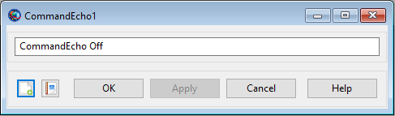

CommandEcho — Toggle the use of the Echo command
CommandEchoEchoSetting
The EchoCommand command is used to toggle the use of the Echo on and off throughout a mission sequence. This allows for specific parts of a mission sequence to be displayed to the message window and the generated log file. This command is a part of the ScriptTools plugin.
| Option | Description | ||||||||||
|---|---|---|---|---|---|---|---|---|---|---|---|
| EchoSetting | Specifies whether the current EchoSetting of the Echo command should be on or off.
|
The CommandEcho command to toggle the Echo on or off at any point in a mission sequence. Any number of this command can be placed throughout a mission sequence. The message box shown below will appear when setting the EchoSetting through the GUI. To set the command on, simply replace Off with On in the text. Note that if the command is renamed, the new name will appear in this GUI display with quotation marks surrounding it.
|  |